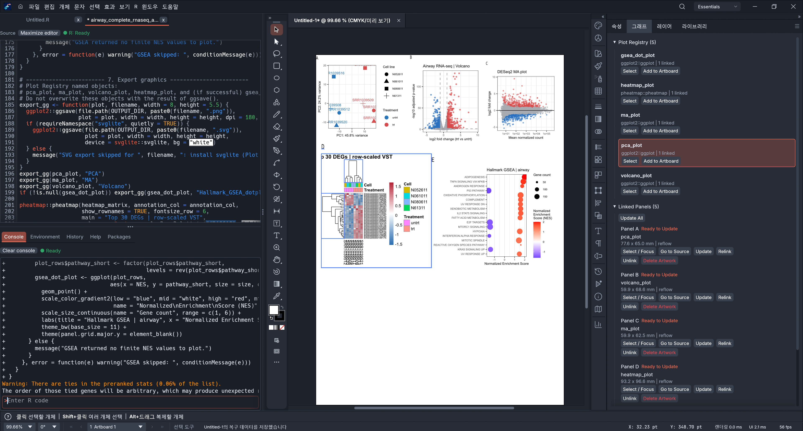
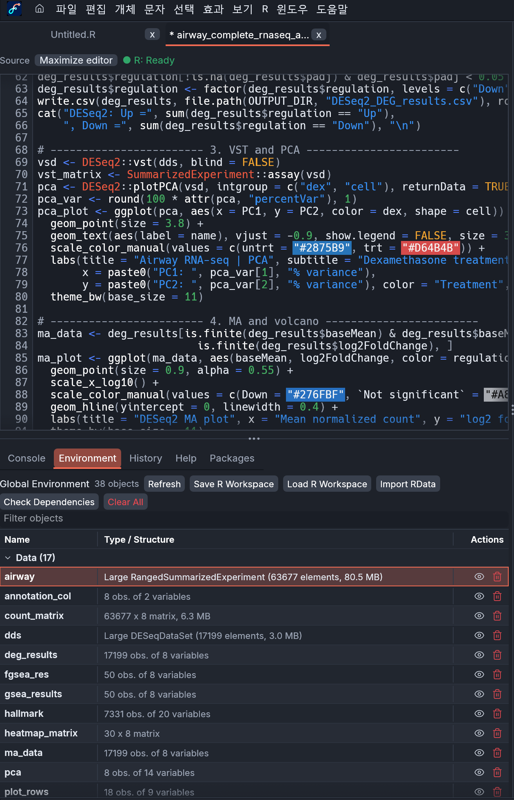
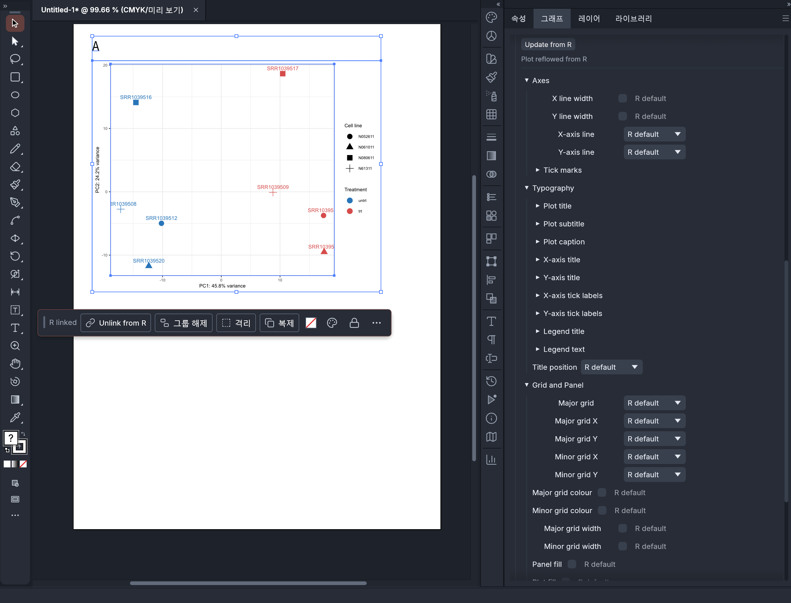

01 / ANALYZE
R 스크립트와 콘솔
스크립트를 편집하고 실행해 결과와 R 작업 환경을 확인합니다.
FigureIDE는 R 분석과 편집 가능한 벡터 그림을 한 작업 공간에 모읍니다. 그래프를 다듬고, 패널을 구성하고, 논문용 SVG와 PDF로 내보내세요.

R 기반 분석과 벡터 편집을 오가며 생기는 번거로움을 줄이고, 그림과 프로젝트를 함께 정리합니다.
스크립트를 편집하고 실행해 결과와 R 작업 환경을 확인합니다.
ggplot 그래프를 관리하고 크기와 스타일을 조정합니다. 필요할 때 R에서 다시 그릴 수 있습니다.
주석을 더하고 패널을 배치한 뒤, 편집 가능한 FigureIDE 파일과 SVG/PDF로 저장합니다.

R과 ggplot2로 만든 시각화를 가져와 FigureIDE에서 편집하고 내보내는 흐름을 영상으로 확인하세요.
YouTube에서 데모 보기 ↗프로젝트 안에 스크립트와 편집 가능한 그림을 함께 보관할 수 있습니다.


현재 개발·검증 단계에 맞춰 배포 경로와 알려진 제한을 안내합니다.
검증된 휴대용 ZIP 릴리스가 등록되면 이곳에서 받을 수 있습니다. 현재 GitHub Releases에서 공개된 빌드를 확인하세요.
릴리스 확인 ↗Actions 실행 결과에서 해당 아키텍처의 ZIP 아티팩트를 받을 수 있습니다. 아직 공증된 최종 사용자용 릴리스가 아닙니다.
macOS 빌드 보기 ↗수동 실행한 Linux 워크플로의 아티팩트를 확인하세요. Ubuntu XFCE 환경에서 검증된 실험용 빌드이며 시스템 라이브러리가 필요합니다.
Linux 빌드 보기 ↗기능, 빌드 안내, 알려진 제한과 변경 내역을 확인하세요.